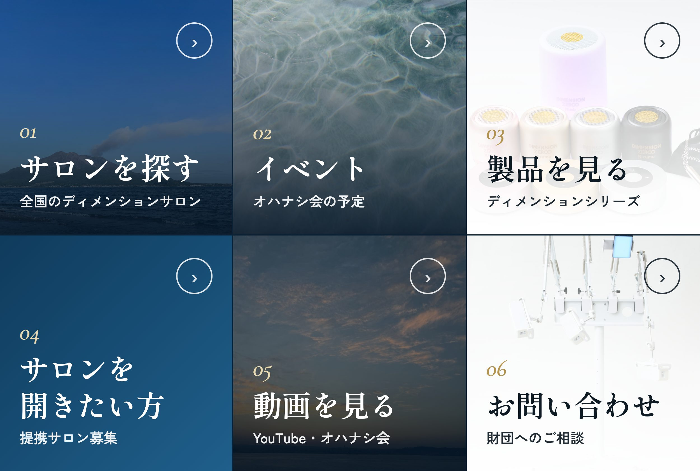

どこから入っても、最後は「お近くのサロン」か「財団へのご相談」にたどり着くようにつなぎます。
知る。Google検索・Googleマップ、Instagram、Facebook、YouTube、サロンさんからの紹介。
確かめる。ホームページ（製品・財団について・プロフィール・イベント）。
つながる。公式LINE。迷った方も、ここで受け止めます。
行動する。サロンに連絡して体験する／イベントに申し込む（Select Type）／サロン開業を相談する。
6つに分けた大きいサイズです。いちばん押されやすい左上に「サロンを探す」を置きます。

| 場所 | 表示 | 押したときの動き | ラベル（20文字まで） |
|---|---|---|---|
| 左上 | サロンを探す | リンク：ホームページの「全国のサロン」 | サロンを探す |
| 中上 | イベント | リンク：ホームページの「イベント」 | イベントの予定 |
| 右上 | 製品を見る | リンク：ホームページの「製品」 | 製品を見る |
| 左下 | サロンを開きたい方 | リンク：ホームページの「提携サロン募集」 | サロン開業のご相談 |
| 中下 | 動画を見る | リンク：財団のYouTubeチャンネル | 動画を見る |
| 右下 | お問い合わせ | リンク：ホームページの「お問い合わせ」 | お問い合わせ |
吹き出しは5つまで、1つ500文字までです。{Nickname} と書いた所に、相手の名前が入ります。
「福岡」と送ると、福岡のサロン一覧のページを返します。キーワードは完全一致なので、「福岡県」「ふくおか」も一緒に登録します。1つの応答に51個まで登録できます。
| 応答 | キーワード（例） | 返す内容 |
|---|---|---|
| 九州・沖縄 | 福岡／福岡県／ふくおか／佐賀／佐賀県／長崎／長崎県／熊本／熊本県／大分／大分県／宮崎／宮崎県／鹿児島／鹿児島県／沖縄／沖縄県 … | 九州・沖縄のサロン一覧のリンク＋「くわしくは各サロンへ直接ご連絡ください」 |
| 関東 | 東京／東京都／神奈川／神奈川県／埼玉／埼玉県／千葉／千葉県 … | 関東のサロン一覧のリンク |
| 中部・関西 | 愛知／愛知県／大阪／大阪府／兵庫／兵庫県 … | 中部・関西のサロン一覧のリンク |
| 中国・北海道 | 広島／広島県／岡山／岡山県／北海道 … | 中国・北海道のサロン一覧のリンク |
| サロンがない地域 | 青森／岩手／… 残りの都道府県 | 「いまお近くにサロンはありませんが、近い地域のサロンや、オンラインのオハナシ会をご案内します。担当から改めてご連絡します」 |
無料プランでも使えます。日数は1〜30日で決められます。
| いつ | 内容 | 入口 |
|---|---|---|
| 1日後 | ディメンション・ゼロとは（鹿児島・垂水から始まったこと、財団はデバイスの作り手で、体験はサロンで、ということ） | 財団について |
| 3日後 | サロンで過ごす約35分（体験の流れ、予約はサロンへ直接） | サロンを探す |
| 7日後 | 開発者のこと、オハナシ会のこと、動画 | イベント・YouTube |
| 配信 | 頻度 | 中身 |
|---|---|---|
| イベントのお知らせ | 決まったとき＋1週間前 | 投稿画面の「告知をつくる」でできる文章と画像 |
| 新しいサロンのオープン | オープンのとき | サロン名・地域・オープンイベント |
| 財団からのお便り | 月1回まで | ブログの新しい記事、活動のご報告 |
お打ち合わせで、Facebookは同世代の方がよく見ているので活用したい、とうかがいました。財団のFacebookページはまだ見つからなかったので、作るところからの流れです。
ページの「イベント」→「新しいイベントを作成」→ 名前と日時、会場ありかオンラインかを選び、詳細に「告知をつくる」のFacebook用文章を貼ります。申込はSelect TypeのURLを載せます。
ページの設定から、芝原に「部分的な権限」（コンテンツ、メッセージ、イベント、インサイト）をお渡しください。「全権限」は、ほかの人の追加や削除までできてしまうので、お渡しいただかなくて大丈夫です。
お打ち合わせのとおり「知ってもらう窓口」として作り、重きは置きません。Googleで財団の名前を調べた人に、正しい情報とホームページ・公式LINE・SNSの入口を見せるのが役目です。
| 項目 | 案 | 決まり・注意 |
|---|---|---|
| ビジネス名 | 一般財団法人ディメンション・ゼロ | 普段使っている名前だけ。「鹿児島」「周波数」などの言葉を足すのは禁止です |
| 住所の出し方 | 要確認 本部で来客を受けるなら住所を表示。受けないなら住所は非表示にして、地域だけ設定 | 店舗を持たない事業者は住所を隠すのが決まりです。地域は20か所まで、拠点から車で約2時間以内。バーチャルオフィスは登録できません |
| カテゴリ | 要確認 登録画面で「財団」「非営利団体」「製造業者」などを候補に、いちばん近いものを1つ | カテゴリ名はGoogleが一覧を出していないので、登録画面で選べるものから決めます。「何をしている団体か」で選びます |
| ウェブサイト | 新しいホームページのトップ | https:// から始まる形で |
| SNS | Facebook、Instagram、YouTube | それぞれ1つずつ登録できます |
| 電話 | 要確認 財団の代表番号 | 携帯番号しかない場合はご相談ください |
| 営業時間 | 来客を受けない場合は入れない |
Googleが確認のしかたを自動で決めます（電話・SMS、メール、動画の撮影など）。動画の場合は、看板や事務所の中を、途中で切らずに1本スマホで撮ります。審査は最長で5営業日ほどです。はがきの場合はコードが30日で無効になるので、届いたらすぐ入力し、届くまでは名前・住所・カテゴリを変えないでください。
イベントが決まったら「イベント」の投稿を出します。タイトルと開始・終了の日時が必須です。文章は投稿画面の「告知をつくる」にあるGoogle用をそのまま使えます。投稿は公開から6か月たつと表に出なくなります。
「ビジネス プロフィールの設定」→「ユーザーとアクセス権」から、芝原を「管理者」で招待してください。オーナーは御財団のままで、ユーザーの追加・削除はオーナーだけができます。
新しいホームページには、御財団で使っていただく「投稿画面」を付けます。構成サンプルで、実際に入力して試せます。
イベントを載せる。イベント名・日時・会場・参加費・定員・主催・申込ページのURL・写真・内容を入れて保存すると、イベント一覧とイベントの詳しいページができます。過去のイベントは自動で「これまでの活動記録」に移ります。
ブログを書く。タイトル・日付・書いた人・写真・本文を入れて保存すると、ブログに並びます。
告知をつくる。イベントを選ぶと、LINE・Instagram・Facebook・Googleビジネスプロフィールにそのまま貼れる文章と、Instagram用の正方形・ストーリーズ用の縦長の告知画像ができます。
表現チェック。入力している間に、効果や病気に触れる言葉に赤・黄の印が付き、言い換えの例が出ます。